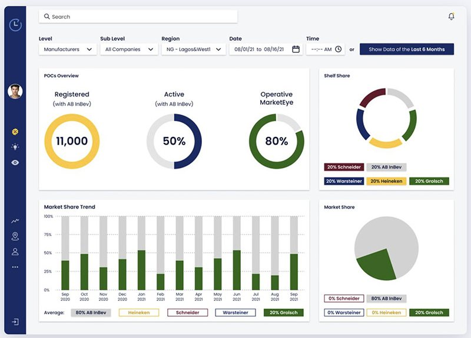

1
Three levels of analysis
A path from “How are we performing?” to “Where is the opportunity?” to “What is actually happening inside this refrigerator?”.
TradeoffMore screens to navigate than one dense dashboard, so each level shows only what that question needs.
